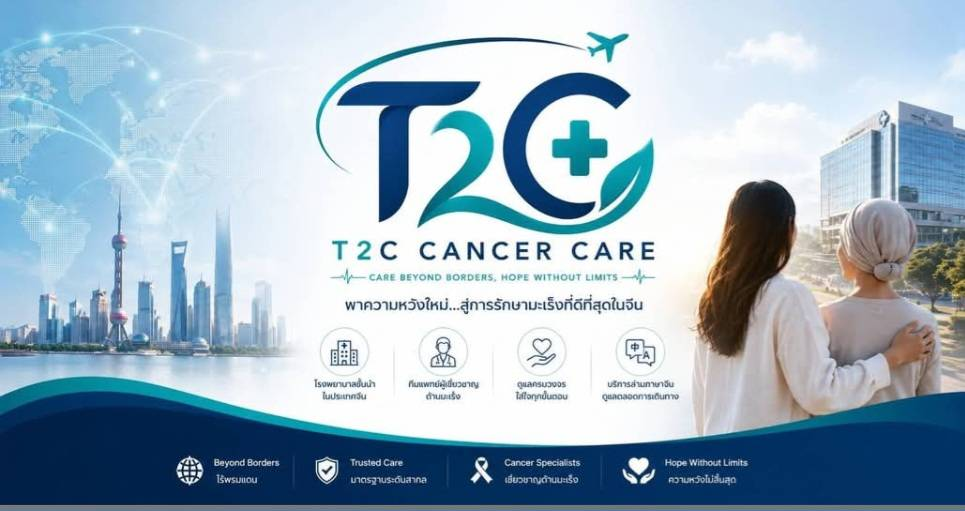

ให้คำปรึกษา ประสานงานโรงพยาบาล ดูแลเรื่องเอกสาร วีซ่า ล่าม และการเดินทางแบบครบวงจร

เราดูแลผู้ป่วยและครอบครัวทุกขั้นตอน ตั้งแต่เริ่มปรึกษา จนถึงการเดินทางกลับประเทศไทย
ดูแลและประสานงานอย่างใกล้ชิด
ประสานงานกับโรงพยาบาลพันธมิตรในประเทศจีน
ช่วยสื่อสารระหว่างผู้ป่วยกับทีมแพทย์
ตั้งแต่สนามบินจนถึงโรงพยาบาล
ส่งผลตรวจให้แพทย์ประเมินก่อนเดินทาง
ติดตามอาการและให้คำแนะนำต่อเนื่อง
ส่งผลตรวจให้แพทย์เฉพาะทางประเมินก่อนเดินทาง
ช่วยเตรียมเอกสารและประสานงานก่อนเข้ารับการรักษา
ดูแลตั้งแต่ออกเดินทางจนถึงโรงพยาบาล
ช่วยสื่อสารระหว่างแพทย์และผู้ป่วยตลอดการรักษา
โรงพยาบาลเฉพาะทางด้านโรคมะเร็ง พร้อมทีมแพทย์ผู้เชี่ยวชาญและเทคโนโลยีการรักษาที่ทันสมัย
พร้อมให้คำปรึกษาโดยไม่มีค่าใช้จ่าย
https://line.me/R/ti/p/@394txvpy" class="btn-main"> ปรึกษาผ่าน LINE